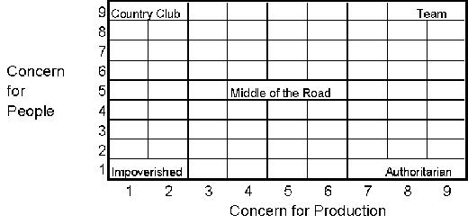

Leadership styles and problem solving - de Bono’s ‘Six Hats’
© 2003 Dr Stuart Palmer, Deakin University, Australia
Leadership - a definition
The ability to get work done with and through others, while at
the same time winning their confidence, respect, loyalty and
willing cooperation
The first part of the definition could be a definition of
management
The complete definition highlights the difference between simply
managing and being a leader
Leadership
Leaders influence many aspects of work, they:
are the chief communicator of the group;
affect motivation by their behaviour; and
are responsible for the group’s objectives being understood
and achieved
As leadership is a critical influence of group performance,
it is worth understanding more about leadership and what makes an
effective leader
Effective leadership
Contrary to popular belief, no one is born a leader
But some people do have certain abilities that predispose them to
developing into a leader
Like public speaking, and many other skills, leadership can be
learned and developed
While there is no agreed list of qualities that make a good
leader
And different leadership styles suit different situations
It is widely agreed that leaders tend to have the following
characteristics:
Intelligence ¹ academic achievement
Social maturity = emotional maturity and a wide range of
interests
Self-motivation and an achievement orientation
Self confidence and good communications skills
Theories of leadership
There has been a lot of research into styles of leadership
And the general conclusion is that a leader’s concern for
production needs to be balanced with a concern for subordinates
Robert Blake and Jane Mouton have devised the ‘Management
Grid’
This is a framework for identifying a range of leadership styles
Based on combinations of concern for people and concern for
production
The Blake and Mouton ‘Management Grid’

Blake and Mouton argue that the 9.9 management
style is the most effective type of leadership behaviour
This approach will generally result in improved performance, low
absenteeism and turnover and high employee satisfaction
Situational leadership
We find that much of the recent research highlights the influence
of situational factors on which leadership style a manager should
use
Hersey and Blanchard’s leadership theory says that a
leader must chose a style that is appropriate for the situation
ie. a manager leading an inexperienced group will need to spell
out what is required and closely supervise the work
a manager of an experienced team is probably better off getting
out of their way and just monitoring their progress
Problem solving & creativity
You will recall that we said leadership is just one of many
skills that can be learned and developed
Well, so is problem solving and creativity
In fact, de Bono says, creativity is not natural, and we have to
learn it
All through our life we subconsciously look for patterns which
help us predict the future
ie, things fall down, the sun rises in the east, you can’t
build a house out of plasticine, etc
Over time we come to depend on these patterns,
and they tend to control and limit both our actions and our
thinking
de Bono recounts from his University days how he was newly
arrived and couldn’t get back before the gates were closed
at night
A companion told him how to climb over the two fences to get in
after hours
He climbed one high fence and jumped to the ground
He got up and climbed the next fence only to find himself outside
again - HOW?
He had climbed over near a corner and climbed out again
over the nearest fence, which was the other outer wall
When he went around to the front gate, he discovered it had been
open all the time
He had just imagined that it was closed, because that’s how
it was done normally
de Bono talks about ‘vertical thinking’ and ‘lateral thinking’
Vertical thinking
Vertical thinking is where we base our thought processes on our
prior knowledge, our experience and logic
Our thought processes are based on assumptions and follow a
logical sequence
This is the natural form of thinking
It constrains our creativity and ability to solve problems
I was told the gate will be closed, so there is no point in checking it
Lateral thinking
A set of systematic techniques used for changing concepts and
perceptions and generating new ones
More generally - exploring multiple possibilities and approaches
instead of pursuing a single approach
The ‘six hats’ is one of de Bono’s techniques
I could check the gate before I jump the fence
Is this fence in front of me really the second fence I have to
get over?
If we are innocent or ignorant of the ‘done thing’,
we can produce very creative solutions
Children and non-experts can sometimes produce creative solutions
to problems
If we are neither innocent or ignorant, we can employ lateral
thinking techniques to help us be creative
There is a story of a group of women being shown around a war
time factory
Someone mentioned a problem in the sharpening of carbon
electrodes used in search lights
One of the women suggested using a pencil sharpener
It worked!
de Bono has provided the world with a number of techniques
that can be used to stimulate lateral thinking
The ‘six hats’ is not a lateral thinking technique per
se, rather a structured process for introducing lateral thinking
into problem solving, particularly in groups
de Bono’s ‘Six Hats’
de Bono describes the six hats as a ‘game’
but you should be carefully not to underestimate the power in its
simplicity
Many major international organisations use this technique for
problem solving
Each ‘hat’ represents a perspective or way of
thinking
They are metaphorical hats that a thinker can put on or take off
to indicate the type of thinking they are using
In a group we can ask members to ‘put on’ different
hats in a sequence to aide the problem solving process
This can help overcome the problem of each group member
adopting random positions at random times
It also permits us to control people who insist of sticking to
one perspective (ie. negative) - we can ask them to assume a
different hat
Let’s describe the various hats we can wear
The white hat
White is neutral
While wearing the white hat we ignore arguments and proposals,
we examine the facts, figures and information that we have, and
identify what information we don’t have, and how we might
get it
What information do we have here?
What information is missing?
What information would we like to have?
How are we going to get the information?
The red hat
Red is for feelings, hunches and intuition
It permits people to put forward their feelings without the need
for apology, explanation or attempt to justify them
Intuition may be a composite judgement based on years of
experience, and
it can be valuable even if the reasons behind it cannot be
spelled out consciously
Putting on my red hat, this is what I think about the project
...
My gut feeling is that it will not work
I don’t like the way this is being done
My intuition tells me that prices will fall soon
The black hat
The black hat is the logical negative
It is the hat of caution & critical judgement
It is the most used hat, and perhaps the most valuable hat,
mistakes may be disastrous
At the same time, it is very easy to overuse the black hat, it is
easy to kill creative ideas with early negativity
The regulations do not permit us to do that
We do not have the production capacity to meet that order
When we tried a higher price the sales fell off
He has no experience in export management
The yellow hat
The yellow hat is for optimism and the logical positive view of
things
It looks for feasibility and how something can be done
It looks for benefits, but they must be logically based
That might work if we moved the production plant nearer to the
customers
The benefit would come from repeat purchases
The high cost of energy would make everyone more energy efficient
The green hat
The green hat is for creative thinking, new ideas and additional
alternatives
Putting on the green hat makes time and space for creative effort
This is were we engage in lateral thinking and other creative
techniques
We need some new ideas here
Are there any additional alternatives?
Could we do this in a different way?
Could there be another explanation?
The blue hat
The blue hat is the thinking overview or process control hat
It is usually used by the chairperson of the meeting:
it sets the agenda for thinking;
it suggests the next step for thinking;
it asks for summaries, conclusions and decisions
We have spent far too much time looking for someone to blame
Could we have a summary of your views?
I think we should take a look at the priorities
I suggest we try some green hat thinking to get some new ideas
de Bono’s ‘Six Hats’
It is common for meetings to get bogged down in arguments where
people take positions and defend them to the death
The 6 hats is a cooperative tool rather than a adversarial tool
In a normal meeting, it is easy for someone not to look for
positives if they do not support an idea - the 6 hats technique
challenges participants to see all sides
Some people see the downside in everything
The 6 hats technique offers them ample opportunity for black hat
thinking,
but challenges them to think in other ways as well
It is important the hats are not categories or labels for people
rather than limiting people, the aim of the 6 hats is to get the
thinker to use all 6 hats
Some times it is possible to put together a sequence of hats that will assist in thinking productively about some matter
The actual order will vary with the situation,
but for a new matter, the sequence might be:
The six hats - for a new problem
For a well known idea
For a well known proposal, the sequence of hats might run:
References
de Bono, E. (1992), Serious Creativity, HarperCollins, New
York.
de Bono, E. (1986), Six Thinking Hats, Little, Brown, New
York.
de Bono, E. (1995),Serious Creativity, Journal for Quality and
Participation, 18, 5, 12-18, USA.